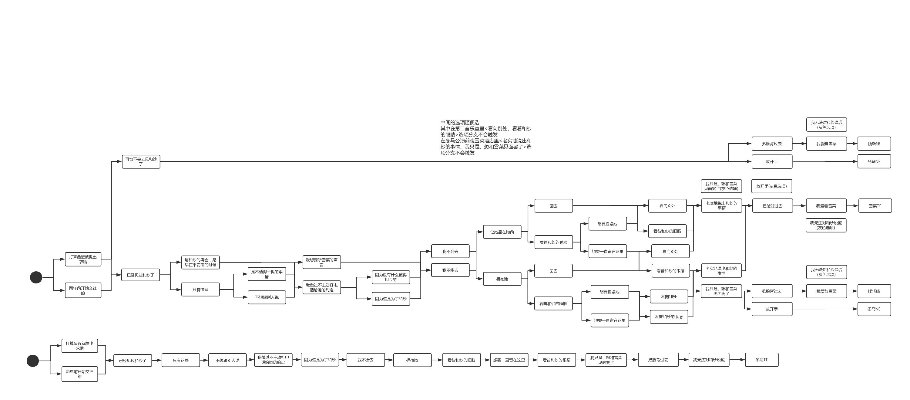

我这篇通关推荐顺序的宗旨是让玩家的体验更好。对于《白色相簿2》，不看剧透玩起来的感觉要比看剧透好非常多！所以在不透剧的前提下，通过这篇文章科普一些信息，并且提高游戏体验
名词解释：
1. 《IC》：序章（Introductory Chapter）。全程无选项。一条线。
2. 《CC》：终章（Closing Chapter），时间线为《IC》的三年后。有 6 条线。
3. 《CODA》：最终章（此英文不是缩写），接着《CC》雪菜线的剧情，时间线为《CC》的两年后。有 4 条线。
4. 《MAS》: 后日谈（Mini After Story），时间线为《CODA》的三年后，甜度爆表。有 2 条线，分别接着《CODA》中“雪菜TE”、“和纱TE”的剧情。注意：《SP》包含《MAS》所有内容。
5. 《SP》：特典（Special Contents），此处指所有额外剧情内容。注：其实更具体的话，它指代2018年发售的“扩展版”（含《IC》、《CC+CODA》、《特典》）中唯一被汉化的部分（用粗体标出）。
6. “三女” ：指《CC》中新出现的三名可攻略女角色：和泉千晶、杉浦小春、风冈麻理。
写在前面的话：
所有的“特典”部分都对剧情影响不大（除《致不共戴天的你》和《MAS》），不强制看，更不强制按照本攻略的顺序看。但大部分特典都像游戏本体一样精彩，所以还是建议看一看的。此外，因为部分特典有剧透，所以不应提前看。
有人可能会问，《白色相簿2》那么多游戏版本，应该玩哪个？以及，笔者有没有资源？这两个问题见文章末尾的“PS”部分。
攻略链接在文末的“附1”，我整理的游戏目录见文末的“附3”。
> 推荐顺序（《CC》前）：
1. 《IC》一周目
2. 轻小说《雪菜公主的受难与大臣的诡计》（《雪菜姫の受難と大臣の悪巧み》）（《SP》）雪菜前传
3. 轻小说《蓦然雪降，且静待飞雪再临》（《雪が解け、そして雪が降るまで》）（《IC》或《SP》）冬马前传
4. 轻小说《他的女神、那家伙的救世主》（《彼の神様、あいつの救世主》）（《SP》或cv2845371）
4. 《IC》二周目（有追加剧情）
5. drama《庆典之前～二人的24小时～》（《祭りの前 〜 ふたりの24时间 〜》）（av3621335）
6. 轻小说《庆典之后～雪菜的三十分钟～》（《祭りの後～雪菜の三十分～》）（玩完二周目后再读）（《SP》或cv2838351）
7. 轻小说《传达不到的爱恋，已经传达到了》（《届かない恋、届いた》）（玩完二周目后再读）（《SP》）
8. 轻小说《Twinkle Snow～梦想～》（《Twinkle Snow ～夢想～》）（玩完二周目后再读）（《SP》或（上篇）cv2838552、（下篇）cv2838576）IF线
9. 轻小说《忘记歌唱的偶像》（《歌を忘れた偶像》）（《IC》或《SP》）
10. 《CC》一周目。建议一周目别看攻略，凭着自己的初心去玩。《CODA》也如此。
> 推荐顺序（《CC》后）：
《CC》后开始有分支，不再是同一个故事线，所以就没有绝对的顺序，而是因人而异。因此，我不再用序号的方式。
《CC》一周目推荐不看攻略，凭初心选。于是，有两种情况：①你进了雪菜线；②你进了除雪菜线以外的线。
若为①，那建议直接继续玩《CODA》，把《CODA》的四条线+《MAS》的两条线通了再回来玩三女线。因为三女线通下来花的时间不短，通完三女线再进《CODA》就有可能已经忘了雪菜线的剧情了。不过大家都有不同意见，所以此建议并不强制，以你自己的想法为准。
若为②，那建议把除雪菜线外的五条线都通完之后再通雪菜线和《CODA》。
当然，不看攻略自己摸索剧情也是可以的，可能会有其他人所感受不到的奇妙体验。
CC的六个结局（并无先后之分，但如果你是有党派人士，那除外）：
1. 雪菜线（进《CODA》）
2. 千晶线NE
3. 千晶线TE
4. 小春线
5. 麻理线
6. 滑雪线（BE）
第一次进千晶线必进NE，通关NE后可进TE。
玩完千晶TE后，建议去看drama《庆典之日～舞台下的物语～》（《祭りの日 〜 舞台の下の物语 〜》）（av3621335）
玩完小春线后，建议去看轻小说《台风一过的小春日和》（《台風一過の小春日和》）（《SP》）
玩完雪菜线之后，建议去看drama《一泊二日的凯旋》（《一泊二日の凯旋》）（av3621335）
玩完雪菜线之后，建议去看舞台剧《再会与赎罪的新年》（《再会と贖罪のニューイヤー》）（av84128096）
此外，在通关三女线（其实是千晶NE）后，《IC》会追加剧情。但个人建议先玩千晶TE再玩《IC》三周目。
《CODA》一周目同样推荐不看攻略，凭初心选。走完初心之后再看攻略。
CODA的四个结局（并无先后之分，但如果你是有党派人士，那除外）：
1. 雪菜NE（腰斩线）（官方NE）
2. 雪菜TE + 《MAS》雪菜线《通往幸福之路》（《幸せへと進む道》）
3. 冬马NE（浮气线） + 追加剧情《致不共戴天的你》（《SP》或av2632921（中间缺了几分钟）。）有部分玩家认为本结局不应被称为“冬马NE”，而只应被称为“浮气线”。此处为方便描述仍然称其“冬马NE”。
4. 冬马TE + 《MAS》冬马线《回归幸福之道》（《幸せへと戻る道》）
玩完冬马TE之后，建议去看drama《2016年的除夕》（《2016の大晦日》）（av37404219）
玩完冬马TE之后，建议去看轻小说《已经，不是WHITE ALBUM的季节了》（《もう、ホワイトアルバムの季節じゃない》）（《SP》）
玩完雪菜NE之后，建议去看广播剧《相约在而立》（原本无标题，此为结合内容自取）（搞笑向）（BV15R4y1t7h2）（此广播剧出自活动《白色相簿2学园祭2020～10th winter memories～》，视频标题写错了）
注：《CODA》的四条线中，除了雪菜NE（腰斩线）以外，其他三条线都应该“从头玩”而不是从中间玩，并且按照你想进的这条线的“最佳攻略方式”来选（初心除外）。这是因为《CODA》的共通线在二刷的时候有追加剧情，且《CODA》共通线的剧情与后面单人线的剧情连接的很紧密。这就导致有些攻略方式里共通线与单人线之间的逻辑并不能契合。
（不妨脑补一个极端的例子：你前面一直按A角色的TE来推，就最后一个选项选了B角色，然后你就可以进入B角色的TE。然后B角色TE的剧情对A角色还不友好。这就很扯淡。）
完全通关之后，可以看五位可攻略角色的后日谈广播剧：《幸せの日～ベッドの上の物語～》。此后日谈包含以下五个部分：
雪菜《一生分の幸せ》（av11916499）
冬马《忠犬はご機嫌斜め》（av15538304）
小春《通い妻の矜持》（av42463892）
千晶《心温まる猥談》（av41577180）
麻理《10分でできること全部》（av34707614）
亦可以看几位主角的声优访谈（BV14V411h7Hw）。
其他：
《白色相簿2》的衍生作品：动画《白色相簿2》、漫画《白色相簿2》 和 轻小说系列《白雪交织的旋律》（《雪が紡ぐ旋律》）。它们是对游戏剧情的不同叙述方式，如果游戏玩通了，它们应该是可看可不看的（不过我并没看过这些作品，所以我也不敢放准话）。
附1：游戏攻略 https://www.3dmgame.com/gl/3710683.html。想找攻略还可以去万能贴吧逛一逛，不过逛贴吧要当心各种容易降智的言论，以及要做好被剧透一脸的准备。
附2：部分小说的专栏文集：https://www.bilibili.com/read/readlist/rl54240。（不过已经有《SP》了所以这个并不必要了。）
附3：游戏目录：
《IC》：
1. 《IC》一周目（进《CC》）
2. 《IC》二周目
3. 《IC》三周目
《CC》：
1. 雪菜线（进《CODA》）
2. 千晶线NE
3. 千晶线TE
4. 小春线
5. 麻理线
6. 滑雪线（BE）
《CODA》：
1. 雪菜NE（腰斩线）
2. 雪菜TE
3. 冬马NE（浮气线）
4. 冬马TE
线路攻略：

《MAS》：
1. 《回归幸福之道》
2. 《通往幸福之路》
《SP》顺序参考汉化版资料：
1. 《致不共戴天的你》
2. 《蓦然雪降，且静待飞雪再临》
3. 《忘记歌唱的偶像》
4. 《Twinkle Snow～梦想～》
5. 《庆典之后～雪菜的三十分钟～》
6. 《他的女神、那家伙的救世主》
7. 《回归幸福之道》（《MAS》）
8. 《通往幸福之路》（《MAS》）
9. 《雪菜公主的受难与大臣的诡计》
10. 《台风一过的小春日和》
11. 《已经，不是WHITE ALBUM的季节了》
12. 《传达不到的爱恋，已经传达到了》
PS1：
有人可能会问：《白色相簿2》那么多游戏版本，我应该玩哪个？
1. 《WHITE ALBUM2 -introductory chapter-》 只有《IC》部分，为 Windows系统 版本
2. 《WHITE ALBUM2 -closing chapter-》 有《IC》、《CC》、《CODA》三部分，为 Windows系统 版本。这是绝大多数人选择的版本，也是我这篇文章所凭借的版本。
3. 《WHITE ALBUM2 -幸せの向こう側-》 有《IC》、《CC》、《CODA》三部分，为 PS3 版本。相比于 Windows 版本，它增加了一些官方小说、广播剧，还增加了一大段游戏内剧情。不过这些增加的东西在《SP》和 B 站都有。
4. 《WHITE ALBUM 2 Mini After Story》 只有《MAS》部分，为 Windows系统 版本。
5. 《WHITE ALBUM2 EXTENDED EDITION》，为2018年发售的扩展版（大合集），含《IC》、《CC+CODA》、《特典》，为 Windows系统 版本。汉化仅提供了其中的“特典”(Special Contents)部分。因此对于中国玩家，它的意义仅为“特典启动器”。
有PC（Windows系统）的话建议选择“2.”和“5.”，有PS3或PSV的话建议选择“3.”和“5.”。
PS2：我不提供资源。不过作为一个几乎已封神的作品，我觉得《白色相簿2》应该是各大 gal 资源站必备的资源吧。可以去那些地方找找看，实在找不到的可以私聊我（不过拒绝伸手党）。《白色相簿2》没有 Steam 正版太亏了。
PS3：WHITE ALBUM2 Special Contents 的汉化出来了（据说 WHITE ALBUM2 Special Contents 是 WHITE ALBUM2 EXTENDED EDITION 套装的一部分），一些特典小说可以不需要在 b 站找了呢。我觉得自己玩比看视频要好得多~